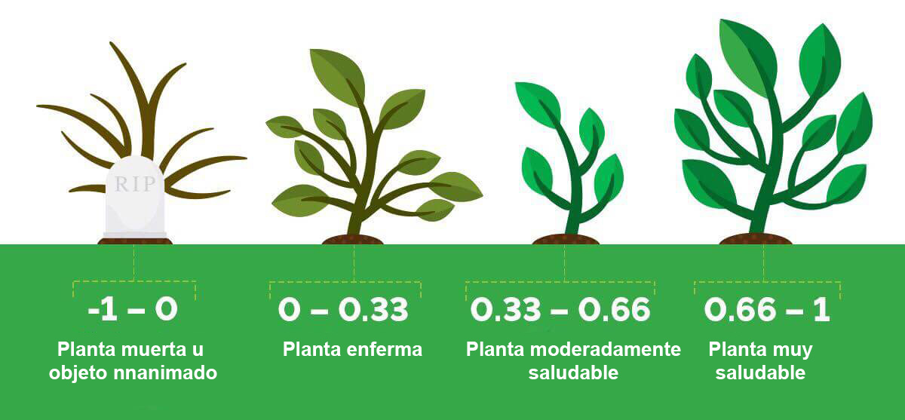

3.1 Análisis de Datos
Se recibieron dos bases de datos en formato csv que corresponde a registros valores NDVI (3.1) en diferentes localidades que se dividen en “disturbed” y “no_disturbed”, que cooresponde si ha sido intervenidos por acción humana. Los datos están ordendos por fecha que van de 2000-01-03 a 2022-04-29.
\[\begin{equation} NDVI=\frac{NIR-RED}{NIR+RED}\tag{3.1} \end{equation}\]

Descripción de valores NDVI
Figura 3.1: A nice image.
Para una visualización completa de las dos series de tiempo se creó una aplicación web con

Aplicación para visualizar la serie de tiempo
Link de la aplicación web: https://denissebastian-app-ts-app-5ud0c1.streamlitapp.com